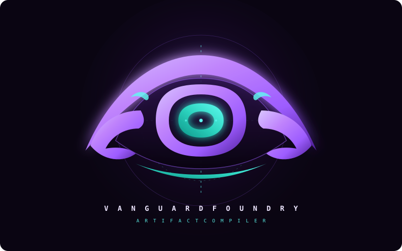

A high-performance local AI foundry engineered for instant drop-in model swapping, real-time canary token watermark tracking, attention drift telemetry, and 1-click synthesis of multi-turn dialogues into glassmorphic Alien Artifacts.
Automated canary token surveillance across multi-turn context. Detects attention dilution, instruction decay, and calculates real-time drift offset percentages.
Evaluates session context fidelity, structural prose density (sections, checkpods, verified code blocks), and context window saturation before forging.
Drop any quantized model file into models/. The synthesizer profiles your AVX-512 hardware and dynamically registers tuned Modelfiles.
Decoupled local server on port 11435 handles automated file persistence, physical disk caching bypass, and global mirror replication to Desktop/Alien Artifacts.